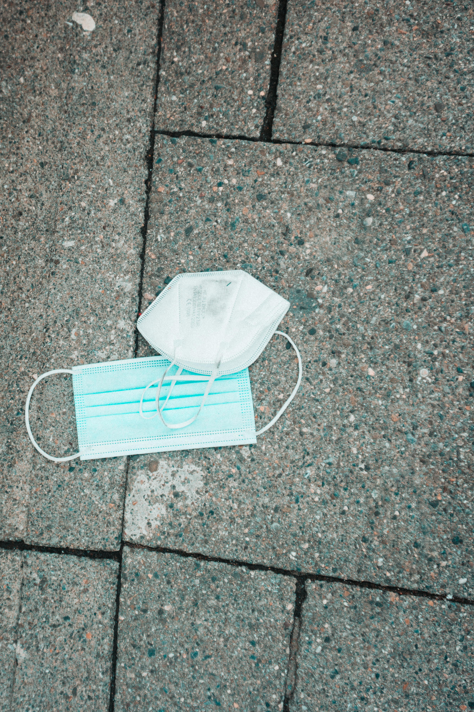
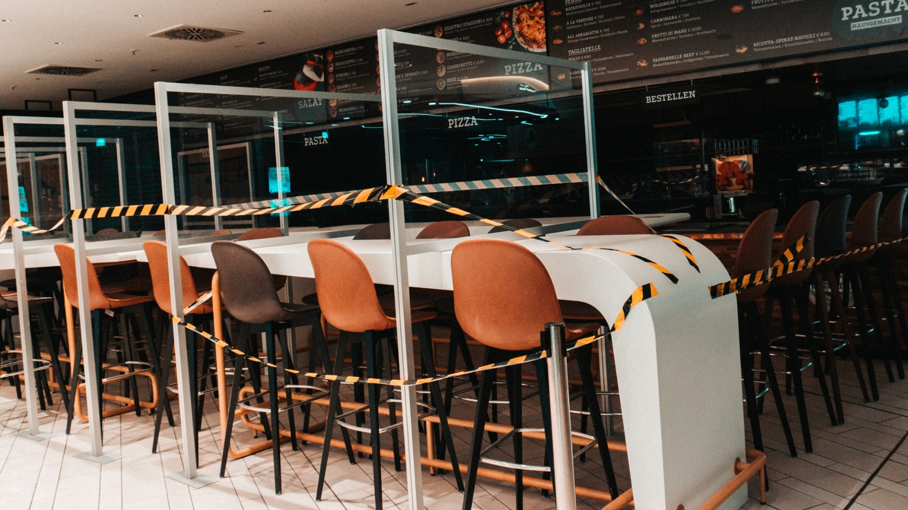
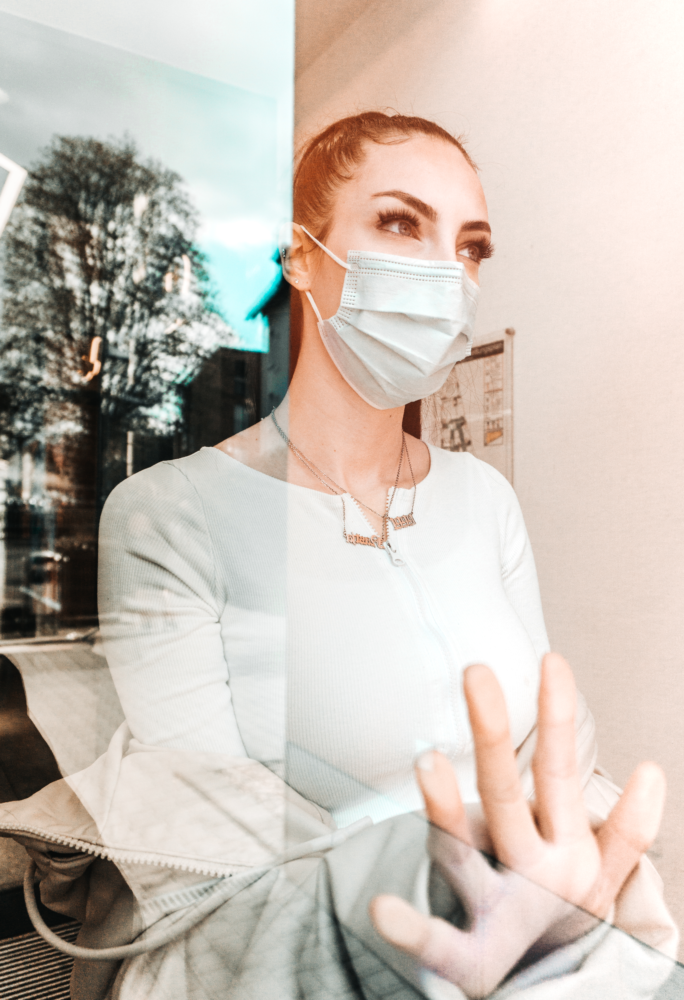

Auch fünf Jahre später überkommt mich ein mulmiges Gefühl, wenn ich die im Rahmen des Fotografie-ÜKs entstandenen Bilder der Corona-Pandemie betrachte. Konstanz im Frühling 2021, auf dem Höhepunkt des zweiten Lockdowns. Uns war klar: Diese Absurdität wollen wir bildlich festhalten.
Die Corona-Pandemie war weit mehr als eine Gesundheitskrise. Sie war ein Toleranztest für die Gesellschaft. Wie weit kann man Grundrechte einschränken, bevor Widerstand entsteht? Wie schnell akzeptieren Menschen drastische Eingriffe in ihr Leben, wenn man an das Gewissen appelliert? Sind wir wirklich so schnell bereit, Freiheit gegen vermeintliche Sicherheit zu tauschen?

Die Konstanzer Innenstadt und das sonst so belebte Lago wirken wie ausgestorben. Die wenigen Passanten wirkten eingeschüchtert, vorsichtig, erschöpft. Herumliegende Masken werden zum Symbol einer Gesellschaft zwischen Angst und Verordnungsmüdigkeit.

Die entstandenen Werke zeigen: Fotografie ist mehr als Ästhetik, sie erzählt Geschichten. Was wir während des Lockdowns dokumentiert haben, ist ein visuelles Zeugnis einer Pandemie, die die Welt verändert hat. Sie sind eine warnende Erinnerung daran, wie fragil unsere Normalität ist.
